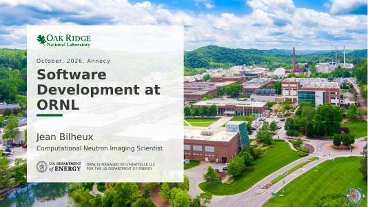

Software Development at ORNL
How we design, build, and ship the software behind neutron imaging at Oak Ridge National Laboratory.
Open the slidesNeutron imaging / Scientific software
I build the software that turns neutron imaging measurements into science — from acquisition to reduction to analysis.
Computational neutron imaging scientist / Oak Ridge National Laboratory

01 / Ideas in public
How we design, build, and ship the software behind neutron imaging at Oak Ridge National Laboratory.
Open the slidesEvery deck runs in the browser — no download, no plugin. More talks will land here as I give them.
Let's connect